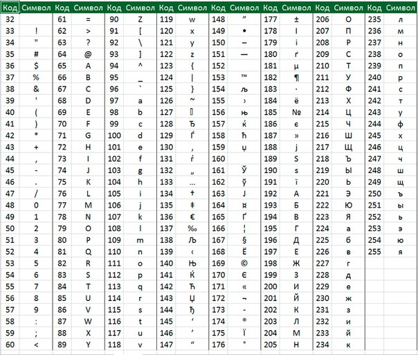

План занятия:
- Определение типа символов.
- Коды символов и таблица ASCII.
- Перевод символов в другие типы данных (цифровые символы в числа типа int).
- Библиотека ctype.h.
- Практикум.
Определение типа символов.
Тип данных char — это целочисленный тип данных (short int), который используется для представления символов.
Каждому символу соответствует определённое число из диапазона [0;255]. Тип данных char также ещё называют символьным типом данных, так как графическое представление символов в Си возможно благодаря типу char.
Символьная константа – это целочисленное значение представленное в виде символа, заключённого в одинарные кавычки, например 'a'.
Пример объявления и инициализации переменных типа char:
char x = 'a'; //в переменную x записана маленькая буква а
char y = '+'; //в переменную y записан знак плюс
char z = '\t'; //в переменную z записан символ табуляции(сдвиг вправо)
char k = '\"'; //в переменную k записан символ двойная кавычка
Коды символов и таблица ASCII.
Вы уже знаете, что тип char является числовым,т.е. каждому символу соответствует определенное число. Существует спецальная таблица в которой приведено соответствие символов их кодам(числовый значениям). Эта таблица называется ASCII(англ. American standard code for information interchange).
Символы с кодами от 0 до 32 являются специальными символами и не имеют графического представления.
Зная коды символов, можно объявлять символ указав его код:
char x = 65; //в переменную x записана большая латинская буква A
char y = 90; //в переменную y записана большая латинская буква Z
char z = 224; //в переменную z записана маленькая русская букава а
char k = 255; //в переменную k записана маленькая русская букава я
При работе с русскими символами не забываем выполнить функцию setlocale(LC_ALL, "Russian"). Без этой функции работать с русскими символами не получится.
Вывод символа.
Вывод символов осуществляется уже знакомой вам функцией вывода printf указав модификатор %с или %d.
Вывод символа двумя способами:
char a = 'c';
printf("%c", a); //c - выводим символ
printf("%d", a); //97 - выводим код символа
Ввод символа.
Для ввода символа используется функция ввода scanf и модификатор %c.
char a;
scanf("%c", &a); //ввод символа
printf("a = %c", a); //вывод символа
Если перед вводом символа был ввод какой-то переменной другого типа, то символ ввести не получится, т.к. в потоке ввода осталось старое значение. Чтобы решить эту проблему можно воспользоваться таким способом:
int x;
char a;
scanf("%d", &x);
while (getchar() != '\n');
scanf("%c", &a);
Перевод символов в другие типы данных (цифровые символы в числа типа int).
Согласно таблице ASCII коды цифровых символов расположены по порядку, от 0 дор 9. Т. е. код каждой следующей цифры будет больше на 1, чем у предудущей(0 - 48, 1 - 49, 2 - 50 ...).
Отнимая код символа '0' от кода любого другого цифрового символа получим значение этого символа в типе int.
#define _CRT_SECURE_NO_WARNINGS
#include <stdio.h>
#include <locale.h>
int main()
{
setlocale(LC_ALL, "Russian");
char c;
int i;
printf("введите цифровой символ");
scanf("%c", &c);
i = c - '0';
printf("int i = %d", i);
return 0;
}
Библиотека ctype.h.
Полезные функции для работы с символами находятся в библиотеке ctype.h.
В таблице приведены только основные функции, которые чаще всего используются. Данные функции работают только с латинскими символами.
| Название | Описание |
|---|---|
| bool isdigit(char) | проверяет является ли символ цифрой |
| bool isalpha(char) | проверяет является ли символ буквой |
| bool ispunct(char) | проверяет является ли символ знаком пунктуации или спецсимволом |
| bool isupper(char) | проверяет является ли символ буквой в верхнем регистре |
| bool islower(char) | проверяет является ли символ буквой в нижнем регистре |
| bool isspace(char) | проверяет является ли символ пробельным символов (табуляция, пробел, перенос строки) |
| char toupper(char) | преобразует символ из нижнего регистра в верхний |
| char tolower(char) | преобразует символ из верхнего регистра в нижний |
Задачи
- Программа выводит все символы и определяет какой это символ
- Создать программу, которая генерирует случайную последовательность символов длиной в 100 элементов
- Ввести символ и если он является цифрой, то превратить его в обычную цифру типа int
- Ввести букву и сменить ее регистр
#define _CRT_SECURE_NO_WARNINGS
#include <stdio.h>
#include <locale.h>
int main()
{
setlocale(LC_ALL, "Russian");
for(int i=0; i<127; i++)
{
char s = i;
if(isdigit(s)) //проверяет является ли символ цифрой
{
printf("%c - цифра\n",s);
}
if(isalpha(s)) //проверяет является ли символ буквой
{
printf("%c - буква\n",s);
}
if(ispunct(s)) //проверяет является ли символ знаком пунктуации или спецсимволом
{
printf("%c - знак\n",s);
}
if(isupper(s)) //проверяет является ли символ буквой в верхнем регистре
{
printf("%c - большая буква\n",s);
}
if(islower(s)) //проверяет является ли символ буквой в нижнем регистре
{
printf("%c - меленькая буква\n",s);
}
if(isspace(s)) //проверяет является ли символ пробельным символов (табуляция, пробел, перенос строки)
{
printf("%c - пробел\n",s);
}
}
}
#define _CRT_SECURE_NO_WARNINGS
#include <stdio.h>
#include <ctype.h>
#include <stdlib.h>
#include <time.h>
int main()
{
srand(time(NULL));
for(int i=0; i<100; i++)
{
char s = 14 + rand()%110;
printf("%c",s);
}
printf("\n");
return 0;
}
#define _CRT_SECURE_NO_WARNINGS
#include <stdio.h>
#include <ctype.h>
int main()
{
char s;
scanf("%c",&s);
if(isdigit(s))
{
int a = s - '0';
//или a = s - 48;
printf("%d\n",a);
}
else
{
printf("no digit!\n");
}
return 0;
}
#define _CRT_SECURE_NO_WARNINGS
#include <stdio.h>
#include <ctype.h>
int main()
{
char s;
scanf("%c",&s);
if(isalpha(s))
{
if(islower(s))
{
s = toupper(s);
}
else
{
if(isupper(s))
{
s = tolower(s);
}
}
printf("%c\n",s);
}
else
{
printf("no letter!\n");
}
return 0;
}